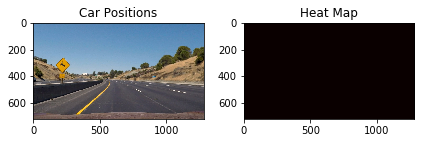

The goals / steps of this project are the following:
You're reading it!
My code is contained in Jupyter notebook 003b_model.ipynb and lesson_functions.py.
The code for this step is contained in cell 6 of the jupyter notebook 003b_model.ipynb.
I started by reading in all the vehicle and non-vehicle images. Here is an example of one of each of the vehicle and non-vehicle classes:
I then explored different color spaces and different skimage.hog() parameters (orientations, pixels_per_cell, and cells_per_block). I grabbed random images from each of the two classes and displayed them to get a feel for what the skimage.hog() output looks like.
Here is an example using the YCrCb color space and HOG parameters of orientations=8, pixels_per_cell=(8, 8) and cells_per_block=(2, 2):

To find the best HOG parameters I started with the RGB colourspace and tested the affect of using the 3 different channels on the HOG output. I found that using the YCrCb colour space with all 3 channels provided the best results.
I also tested the affect of changing the number of orientations, pixelspercell and cellsperblock. I found the default settings for these had a good compremise between speed and accuracy since as you increase these values you are increasing the amount of computation required which makes the algorithm take longer to run.
I trained a linear SVM in jupyter notebook cell 9. The input data for this was a train and test set created by first shuffling all the input data and then reandomly selected images to add to the train and test sets using sklearn.modelselection.traintest_split().
I chose to use the default parameters and a linear kernel for the SVM and it returned good results on the test set showing good generalisation of the model.
Test accuracy of the SVC = 0.9885 Training took 29.06 seconds on AWS EC2 p2.2large
I first started with the slide_window() function in cell 10. I built a for loop that uses two window sizes and overlap parameter of 50% to search the image for cars. The window sizes were (96, 96) and (128, 128). These sizes were chosen by investigatng the affect of increasing and descreasing the window size on the model's ability to identify cars. It was found that a window that was too small e.g.e 64x64 took a lot longer to run, while a window size of 256 was too big and lost the ability to identify cars in the distance.

This algorithm worked well however, was slow compared to the Hog subsampling method proposed in section 35 of the course material. In the end the subsampling code (code cell 19) was used to produce the output video. This code uses a similar sliding window method to that above, however, the image is transformed by a scaling factor.
Ultimately I searched on two scales using YCrCb 3-channel HOG features plus spatially binned color and histograms of color in the feature vector, which provided a nice result. Here are some example images:
This is an example of using the RGB colour space.

Creating the HOG transfor of a car image.


Template Matching is not as effective.

Colour histogram forms one of the input features into the SVM model.

Investigating how images of cars and not-cars have different clustering patterns in different colour spaces.
HSV Colour Space for Car Image
Pixels tend to be more spread out, especially in the V channel.
Here's a link to my video result
I recorded the positions of positive detections in each frame of the video. From the positive detections I created a heatmap and then thresholded that map to identify vehicle positions. I then used scipy.ndimage.measurements.label() to identify individual blobs in the heatmap. I then assumed each blob corresponded to a vehicle. I constructed bounding boxes to cover the area of each blob detected.
Here's an example result showing the heatmap from a series of frames of video, the result of scipy.ndimage.measurements.label() and the bounding boxes then overlaid on the last frame of video:


scipy.ndimage.measurements.label() on the integrated heatmap from all six frames:
The approach I took was to use a support vector machines to build a model using spatial binning, colour histograms and HOG feature vectors. Using this combination worked reliably in both bright images and in shadow to identify cars.
The pipeline could be improved by adding tracking of each car as it passess in and out of frame. This would allow a self driving car to identify a vehicle as one it has seen before, rather than labelling it as a new car.